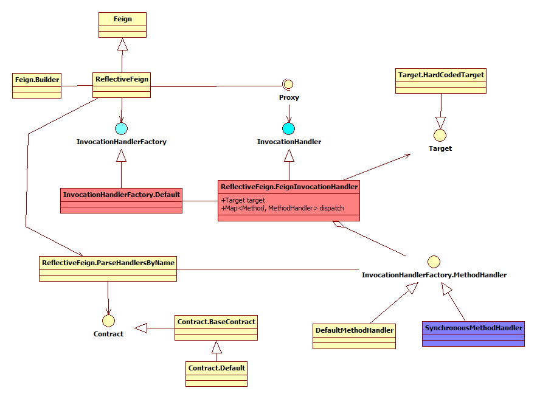
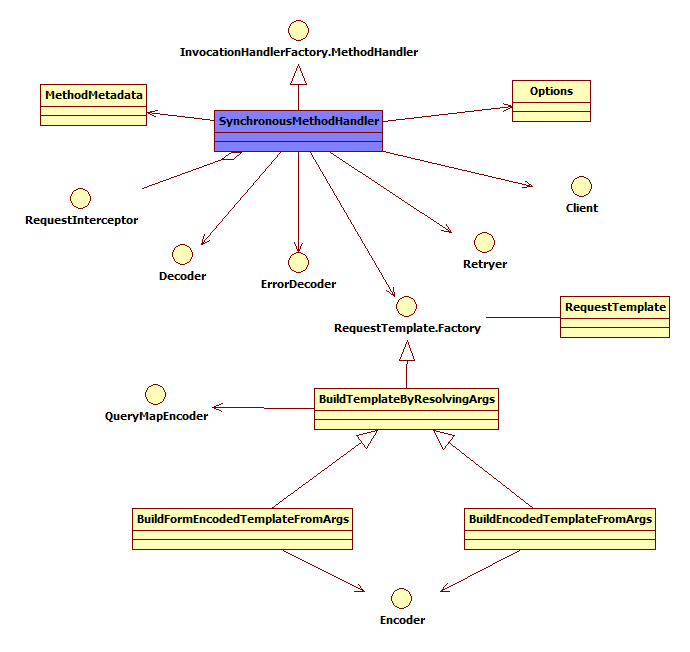
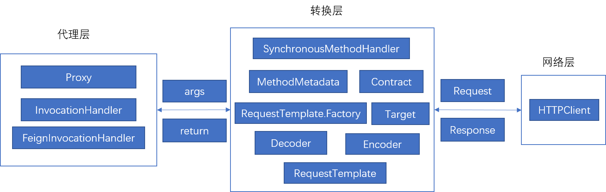
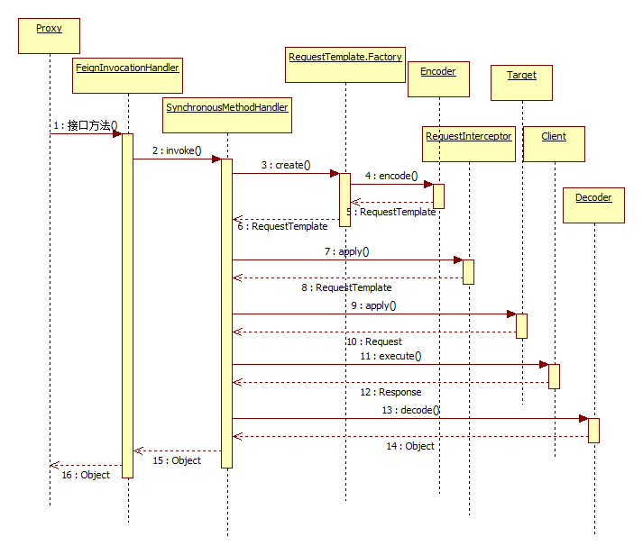

Feign是一款java的Restful客户端组件，Feign使得 Java HTTP 客户端编写更方便。Feign 灵感来源于Retrofit, JAXRS-2.0和WebSocket。feign在github上有近3K个star，是一款相当优秀的开源组件，虽然相比Retrofit的近30K个star，逊色了太多，但是spring cloud集成了feign，使得feign在java生态中比Retrofit使用的更加广泛。
1.feign介绍 feign的基本原理是在接口方法上加注解，定义rest请求，构造出接口的动态代理对象，然后通过调用接口方法就可以发送http请求，并且自动解析http响应为方法返回值，极大的简化了客户端调用rest api的代码。官网的示例如下：
1 2 3 4 5 6 7 8 9 10 11 12 13 14 15 16 17 18 19 20 21 interface GitHub @RequestLine ("GET /repos/{owner}/{repo}/contributors" ) List<Contributor> contributors (@Param("owner" ) String owner, @Param ("repo" ) String repo) ; } static class Contributor String login; int contributions; } public static void main (String... args) GitHub github = Feign.builder() .decoder(new GsonDecoder()) .target(GitHub.class, "https://api.github.com" ); List<Contributor> contributors = github.contributors("OpenFeign" , "feign" ); for (Contributor contributor : contributors) { System.out.println(contributor.login + " (" + contributor.contributions + ")" ); } }
feign使用教程请参考官网https://github.com/OpenFeign/feign/
本文主要是对feign源码进行分析，根据源码来理解feign的设计架构和内部实现技术。
2.Feign.build构建接口动态代理 我们先来看看接口的动态代理是如何构建出来的，下图是主要接口和类的类图：

从上文中的示例可以看到，构建的接口动态代理对象是通过Feign.builder()生成Feign.Builder的构造者对象，然后设置相关的参数，再调用target方法构造的。Feign.Builder的参数包括：
1 2 3 4 5 6 7 8 9 10 11 12 13 14 15 16 17 18 19 20 21 22 23 24 25 26 27 private final List<RequestInterceptor> requestInterceptors = new ArrayList<RequestInterceptor>(); private Logger.Level logLevel = Logger.Level.NONE; private Contract contract = new Contract.Default(); private Client client = new Client.Default(null , null ); private Retryer retryer = new Retryer.Default(); private Logger logger = new NoOpLogger(); private Encoder encoder = new Encoder.Default(); private Decoder decoder = new Decoder.Default(); private QueryMapEncoder queryMapEncoder = new QueryMapEncoder.Default(); private ErrorDecoder errorDecoder = new ErrorDecoder.Default(); private Options options = new Options(); private InvocationHandlerFactory invocationHandlerFactory = new InvocationHandlerFactory.Default(); private boolean decode404; private boolean closeAfterDecode = true ;
这块是一个典型的构造者模式，target方法内部先调用build方法新建一个ReflectFeign对象，然后调用ReflectFeign的newInstance方法创建动态代理，代码如下：
1 2 3 4 5 6 7 8 9 10 11 12 13 14 15 16 17 18 19 20 21 public <T> T target (Class<T> apiType, String url) { return target(new HardCodedTarget<T>(apiType, url)); } public <T> T target (Target<T> target) { return build().newInstance(target); } public Feign build () SynchronousMethodHandler.Factory synchronousMethodHandlerFactory = new SynchronousMethodHandler.Factory(client, retryer, requestInterceptors, logger, logLevel, decode404, closeAfterDecode); ParseHandlersByName handlersByName = new ParseHandlersByName(contract, options, encoder, decoder, queryMapEncoder, errorDecoder, synchronousMethodHandlerFactory); return new ReflectiveFeign(handlersByName, invocationHandlerFactory, queryMapEncoder); } }
ReflectiveFeign构造函数有三个参数：
ParseHandlersByName 将builder所有参数进行封装，并提供解析接口方法的逻辑InvocationHandlerFactory java动态代理的InvocationHandler的工厂类，默认值是InvocationHandlerFactory.DefaultQueryMapEncoder 接口参数注解@QueryMap时，参数的编码器
ReflectiveFeign.newInstance方法创建接口动态代理对象：
1 2 3 4 5 6 7 8 9 10 11 12 13 14 15 16 17 18 19 20 21 22 23 24 25 26 27 28 public <T> T newInstance (Target<T> target) { Map<String, MethodHandler> nameToHandler = targetToHandlersByName.apply(target); Map<Method, MethodHandler> methodToHandler = new LinkedHashMap<Method, MethodHandler>(); List<DefaultMethodHandler> defaultMethodHandlers = new LinkedList<DefaultMethodHandler>(); for (Method method : target.type().getMethods()) { if (method.getDeclaringClass() == Object.class) { continue ; } else if (Util.isDefault(method)) { DefaultMethodHandler handler = new DefaultMethodHandler(method); defaultMethodHandlers.add(handler); methodToHandler.put(method, handler); } else { methodToHandler.put(method, nameToHandler.get(Feign.configKey(target.type(), method))); } } InvocationHandler handler = factory.create(target, methodToHandler); T proxy = (T) Proxy.newProxyInstance(target.type().getClassLoader(), new Class<?>[]{target.type()}, handler); for (DefaultMethodHandler defaultMethodHandler : defaultMethodHandlers) { defaultMethodHandler.bindTo(proxy); } return proxy; }
这段代码主要的逻辑是：
1.创建MethodHandler的映射，这里创建的是实现类SynchronousMethodHandler
2.通过InvocationHandlerFatory创建InvocationHandler
3.绑定接口的default方法，通过DefaultMethodHandler绑定
类图中已经画出，SynchronousMethodHandler和DefaultMethodHandler实现了InvocationHandlerFactory.MethodHandler接口，动态代理对象调用方法时，如果是default方法，会直接调用接口方法，因为这里将接口的default方法绑定到动态代理对象上了，其他方法根据方法签名找到SynchronousMethodHandler对象，调用其invoke方法。
3.创建MethodHandler方法处理器 SynchronousMethodHandler是feign组件的核心，接口方法调用转换为http请求和解析http响应都是通过SynchronousMethodHandler来执行的，相关类图如下：

创建MethodHandler实现类SynchronousMethodHandler的代码：
1 2 3 4 5 6 7 8 9 10 11 12 13 14 15 16 17 18 19 20 21 22 23 24 25 26 public Map<String, MethodHandler> apply (Target key) List<MethodMetadata> metadata = contract.parseAndValidatateMetadata(key.type()); Map<String, MethodHandler> result = new LinkedHashMap<String, MethodHandler>(); for (MethodMetadata md : metadata) { BuildTemplateByResolvingArgs buildTemplate; if (!md.formParams().isEmpty() && md.template().bodyTemplate() == null ) { buildTemplate = new BuildFormEncodedTemplateFromArgs(md, encoder, queryMapEncoder); } else if (md.bodyIndex() != null ) { buildTemplate = new BuildEncodedTemplateFromArgs(md, encoder, queryMapEncoder); } else { buildTemplate = new BuildTemplateByResolvingArgs(md, queryMapEncoder); } result.put(md.configKey(), factory.create(key, md, buildTemplate, options, decoder, errorDecoder)); } return result; }
这段代码的逻辑是：
1.通过Contract解析接口方法，生成MethodMetadata，默认的Contract解析Feign自定义的http注解
2.根据MethodMetadata方法元数据生成特定的RequestTemplate的工厂
3.使用SynchronousMethodHandler.Factory工厂创建SynchronousMethodHandlerSynchronousMethodHandler工厂和RequestTemplate工厂，SynchronousMethodHandler的属性包含RequestTemplate工厂
feign默认的解析器是Contract.Default继承了Contract.BaseContract，解析生成MethodMetadata方法入口：
1 2 3 4 5 6 7 8 9 10 11 12 13 14 15 16 17 18 19 20 21 22 23 24 25 26 27 28 29 30 31 32 33 34 35 36 37 38 39 40 41 42 43 44 45 46 47 48 49 50 51 52 53 54 55 56 57 58 59 60 61 62 63 64 65 66 67 68 69 70 71 72 73 74 75 76 77 78 79 80 81 82 83 84 85 86 87 88 89 90 91 92 93 94 95 96 97 98 99 100 101 102 103 104 105 106 107 108 109 110 111 112 113 114 115 116 117 118 119 120 121 122 123 124 125 126 127 128 129 130 131 132 133 134 135 136 137 138 139 140 141 142 143 144 145 146 147 148 149 150 151 152 153 154 155 156 157 158 159 160 161 162 163 164 165 @Override public List<MethodMetadata> parseAndValidatateMetadata (Class<?> targetType) 。。。 Map<String, MethodMetadata> result = new LinkedHashMap<String, MethodMetadata>(); for (Method method : targetType.getMethods()) { 。。。 MethodMetadata metadata = parseAndValidateMetadata(targetType, method); 。。。 result.put(metadata.configKey(), metadata); } return new ArrayList<MethodMetadata>(result.values()); } protected MethodMetadata parseAndValidateMetadata (Class<?> targetType, Method method) MethodMetadata data = new MethodMetadata(); data.returnType(Types.resolve(targetType, targetType, method.getGenericReturnType())); data.configKey(Feign.configKey(targetType, method)); if (targetType.getInterfaces().length == 1 ) { processAnnotationOnClass(data, targetType.getInterfaces()[0 ]); } processAnnotationOnClass(data, targetType); for (Annotation methodAnnotation : method.getAnnotations()) { processAnnotationOnMethod(data, methodAnnotation, method); } 。。。 Class<?>[] parameterTypes = method.getParameterTypes(); Type[] genericParameterTypes = method.getGenericParameterTypes(); Annotation[][] parameterAnnotations = method.getParameterAnnotations(); int count = parameterAnnotations.length; for (int i = 0 ; i < count; i++) { boolean isHttpAnnotation = false ; if (parameterAnnotations[i] != null ) { isHttpAnnotation = processAnnotationsOnParameter(data, parameterAnnotations[i], i); } if (parameterTypes[i] == URI.class) { data.urlIndex(i); } else if (!isHttpAnnotation) { 。。。 data.bodyIndex(i); data.bodyType(Types.resolve(targetType, targetType, genericParameterTypes[i])); } } if (data.headerMapIndex() != null ) { checkMapString("HeaderMap" , parameterTypes[data.headerMapIndex()], genericParameterTypes[data.headerMapIndex()]); } if (data.queryMapIndex() != null ) { if (Map.class.isAssignableFrom(parameterTypes[data.queryMapIndex()])) { checkMapKeys("QueryMap" , genericParameterTypes[data.queryMapIndex()]); } } return data; } protected void processAnnotationOnClass (MethodMetadata data, Class<?> targetType) if (targetType.isAnnotationPresent(Headers.class)) { String[] headersOnType = targetType.getAnnotation(Headers.class).value(); 。。。 Map<String, Collection<String>> headers = toMap(headersOnType); headers.putAll(data.template().headers()); data.template().headers(null ); data.template().headers(headers); } } protected void processAnnotationOnMethod (MethodMetadata data, Annotation methodAnnotation, Method method) Class<? extends Annotation> annotationType = methodAnnotation.annotationType(); if (annotationType == RequestLine.class) { String requestLine = RequestLine.class.cast(methodAnnotation).value(); 。。。 if (requestLine.indexOf(' ' ) == -1 ) { 。。。 data.template().method(requestLine); return ; } data.template().method(requestLine.substring(0 , requestLine.indexOf(' ' ))); if (requestLine.indexOf(' ' ) == requestLine.lastIndexOf(' ' )) { data.template().append(requestLine.substring(requestLine.indexOf(' ' ) + 1 )); } else { data.template().append( requestLine.substring(requestLine.indexOf(' ' ) + 1 , requestLine.lastIndexOf(' ' ))); } data.template().decodeSlash(RequestLine.class.cast(methodAnnotation).decodeSlash()); data.template().collectionFormat(RequestLine.class.cast(methodAnnotation).collectionFormat()); } else if (annotationType == Body.class) { String body = Body.class.cast(methodAnnotation).value(); 。。。 if (body.indexOf('{' ) == -1 ) { data.template().body(body); } else { data.template().bodyTemplate(body); } } else if (annotationType == Headers.class) { String[] headersOnMethod = Headers.class.cast(methodAnnotation).value(); 。。。 data.template().headers(toMap(headersOnMethod)); } } protected boolean processAnnotationsOnParameter (MethodMetadata data, Annotation[] annotations, int paramIndex) boolean isHttpAnnotation = false ; for (Annotation annotation : annotations) { Class<? extends Annotation> annotationType = annotation.annotationType(); if (annotationType == Param.class) { Param paramAnnotation = (Param) annotation; String name = paramAnnotation.value(); 。。。 nameParam(data, name, paramIndex); Class<? extends Param.Expander> expander = paramAnnotation.expander(); if (expander != Param.ToStringExpander.class) { data.indexToExpanderClass().put(paramIndex, expander); } data.indexToEncoded().put(paramIndex, paramAnnotation.encoded()); isHttpAnnotation = true ; String varName = '{' + name + '}' ; if (!data.template().url().contains(varName) && !searchMapValuesContainsSubstring(data.template().queries(), varName) && !searchMapValuesContainsSubstring(data.template().headers(), varName)) { data.formParams().add(name); } } else if (annotationType == QueryMap.class) { 。。。 data.queryMapIndex(paramIndex); data.queryMapEncoded(QueryMap.class.cast(annotation).encoded()); isHttpAnnotation = true ; } else if (annotationType == HeaderMap.class) { 。。。 data.headerMapIndex(paramIndex); isHttpAnnotation = true ; } } return isHttpAnnotation; }
代码稍微有点多，但是逻辑很清晰，先处理类上的注解，再处理方法上注解，最后处理方法参数注解，把所有注解的情况都处理到就可以了。
生成的MethodMetadata的结构如下：
1 2 3 4 5 6 7 8 9 10 11 12 13 14 15 16 17 18 19 20 21 22 23 24 25 26 27 28 29 public final class MethodMetadata implements Serializable private String configKey; private transient Type returnType; private Integer urlIndex; private Integer bodyIndex; private Integer headerMapIndex; private Integer queryMapIndex; private boolean queryMapEncoded; private transient Type bodyType; private RequestTemplate template = new RequestTemplate(); private List<String> formParams = new ArrayList<String>(); private Map<Integer, Collection<String>> indexToName ; private Map<Integer, Class<? extends Expander>> indexToExpanderClass ; private Map<Integer, Boolean> indexToEncoded ; private transient Map<Integer, Expander> indexToExpander;
Contract也是feign的一个扩展点，一个优秀组件的架构通常是具有很强的扩展性，feign的架构本身很简单，设计的扩展点也很简单方便，所以受到spring的青睐，将其集成到spring cloud中。spring cloud就是通过Contract的扩展，实现使用springMVC的注解接入feign。feign自己还实现了使用jaxrs注解接入feign。
5.初始化总结 上文已经完成了feign初始化结构为动态代理的整个过程，简单的捋一遍：
初始化Feign.Builder传入参数，构造ReflectiveFeign
ReflectiveFeign通过内部类ParseHandlersByName的Contract属性，解析接口生成MethodMetadataParseHandlersByName根据MethodMetadata生成RequestTemplate工厂ParseHandlersByName创建SynchronousMethodHandler，传入MethodMetadata、RequestTemplate工厂和Feign.Builder相关参数ReflectiveFeign创建FeignInvocationHandler，传入参数SynchronousMethodHandler，绑定DefaultMethodHandlerReflectiveFeign根据FeignInvocationHandler创建Proxy
关键的几个类是：
ReflectiveFeign 初始化入口FeignInvocationHandler 实现动态代理的InvocHandlerSynchronousMethodHandler 方法处理器，方法调用处理器MethodMetadata 方法元数据
6.接口调用 为方便理解，分析完feign源码后，我将feign执行过程分成三层，如下图：

三层分别为：
代理层 动态代理调用层
转换层 方法转http请求，解码http响应
网络层 http请求发送
java动态代理接口方法调用，会调用到InvocaHandler的invoke方法，feign里面实现类是FeignInvocationHandler，invoke代码如下：
1 2 3 4 5 6 private final Map<Method, MethodHandler> dispatch;public Object invoke (Object proxy, Method method, Object[] args) throws Throwable 。。。 return dispatch.get(method).invoke(args); }
根据方法找到MethodHandler，除接口的default方法外，找到的是SynchronousMethodHandler对象，然后调用SynchronousMethodHandlerd.invoke方法：
1 2 3 4 5 6 7 8 9 10 11 12 13 14 15 16 17 18 19 20 21 22 23 24 25 26 27 28 29 30 31 32 33 34 35 36 37 38 39 40 41 42 43 44 45 46 47 48 49 50 51 52 53 54 55 56 57 58 59 60 61 62 63 64 65 66 67 68 69 70 71 72 73 74 75 76 77 78 79 80 public Object invoke (Object[] argv) throws Throwable RequestTemplate template = buildTemplateFromArgs.create(argv); Retryer retryer = this .retryer.clone(); while (true ) { try { return executeAndDecode(template); } catch (RetryableException e) { retryer.continueOrPropagate(e); 。。。 continue ; } } } Object executeAndDecode (RequestTemplate template) throws Throwable { Request request = targetRequest(template) 。。。 Response response; long start = System.nanoTime(); try { response = client.execute(request, options); response.toBuilder().request(request).build(); } catch (IOException e) { 。。。 throw errorExecuting(request, e); } long elapsedTime = TimeUnit.NANOSECONDS.toMillis(System.nanoTime() - start); boolean shouldClose = true ; try { 。。。 if (Response.class == metadata.returnType()) { if (response.body() == null ) { return response; } if (response.body().length() == null || response.body().length() > MAX_RESPONSE_BUFFER_SIZE) { shouldClose = false ; return response; } byte [] bodyData = Util.toByteArray(response.body().asInputStream()); return response.toBuilder().body(bodyData).build(); } if (response.status() >= 200 && response.status() < 300 ) { if (void .class == metadata.returnType()) { return null ; } else { Object result = decode(response); shouldClose = closeAfterDecode; return result; } } else if (decode404 && response.status() == 404 && void .class != metadata.returnType()) { Object result = decode(response); shouldClose = closeAfterDecode; return result; } else { throw errorDecoder.decode(metadata.configKey(), response); } } catch (IOException e) { throw errorReading(request, response, e); } finally { if (shouldClose) { ensureClosed(response.body()); } } }
过程比较简单，生成RquestTemplate -> 转换为Request -> client发请求 -> Decoder解析Response
RquestTemplate构建过程 先看看RequestTemplate的结构：
1 2 3 4 5 6 7 8 9 10 11 12 13 14 15 16 17 18 19 private static final long serialVersionUID = 1L ; private final Map<String, Collection<String>> queries ; private final Map<String, Collection<String>> headers ; private String method; private StringBuilder url = new StringBuilder(); private transient Charset charset; private byte [] body; private String bodyTemplate; private boolean decodeSlash = true ; private CollectionFormat collectionFormat = CollectionFormat.EXPLODED;
在SynchronousMethodHandler.invoke方法中生成RequestTemplate
1 2 RequestTemplate template = buildTemplateFromArgs.create(argv);
RequestTemplate.Factory有三个实现类：
BuildTemplateByResolvingArgs RequestTemplate工厂BuildEncodedTemplateFromArgs BuildTemplateByResolvingArgs的子类 重载resolve方法，解析form表单请求BuildFormEncodedTemplateFromArgs BuildTemplateByResolvingArgs的子类，重载resolve方法，解析body请求
BuildTemplateByResolvingArgs创建RequestTemplate的create方法：
1 2 3 4 5 6 7 8 9 10 11 12 13 14 15 16 17 18 19 20 21 22 23 24 25 26 27 28 29 30 31 32 33 34 35 36 37 38 39 40 41 42 43 44 45 46 47 48 49 50 51 52 53 54 55 56 57 58 59 60 61 62 63 64 65 66 67 68 69 70 71 72 73 74 75 76 77 78 79 80 81 82 83 84 85 86 87 88 89 90 91 92 93 public RequestTemplate create (Object[] argv) RequestTemplate mutable = new RequestTemplate(metadata.template()); if (metadata.urlIndex() != null ) { int urlIndex = metadata.urlIndex(); mutable.insert(0 , String.valueOf(argv[urlIndex])); } Map<String, Object> varBuilder = new LinkedHashMap<String, Object>(); for (Entry<Integer, Collection<String>> entry : metadata.indexToName().entrySet()) { int i = entry.getKey(); Object value = argv[entry.getKey()]; if (value != null ) { if (indexToExpander.containsKey(i)) { value = expandElements(indexToExpander.get(i), value); } for (String name : entry.getValue()) { varBuilder.put(name, value); } } } RequestTemplate template = resolve(argv, mutable, varBuilder); if (metadata.queryMapIndex() != null ) { Object value = argv[metadata.queryMapIndex()]; Map<String, Object> queryMap = toQueryMap(value); template = addQueryMapQueryParameters(queryMap, template); } if (metadata.headerMapIndex() != null ) { template = addHeaderMapHeaders((Map<String, Object>) argv[metadata.headerMapIndex()], template); } return template; } protected RequestTemplate resolve (Object[] argv, RequestTemplate mutable, Map<String, Object> variables) Map<String, Boolean> variableToEncoded = new LinkedHashMap<String, Boolean>(); for (Entry<Integer, Boolean> entry : metadata.indexToEncoded().entrySet()) { Collection<String> names = metadata.indexToName().get(entry.getKey()); for (String name : names) { variableToEncoded.put(name, entry.getValue()); } } return mutable.resolve(variables, variableToEncoded); } protected RequestTemplate resolve (Object[] argv, RequestTemplate mutable, Map<String, Object> variables) Object body = argv[metadata.bodyIndex()]; checkArgument(body != null , "Body parameter %s was null" , metadata.bodyIndex()); try { encoder.encode(body, metadata.bodyType(), mutable); } catch (EncodeException e) { throw e; } catch (RuntimeException e) { throw new EncodeException(e.getMessage(), e); } return super .resolve(argv, mutable, variables); } protected RequestTemplate resolve (Object[] argv, RequestTemplate mutable, Map<String, Object> variables) Map<String, Object> formVariables = new LinkedHashMap<String, Object>(); for (Entry<String, Object> entry : variables.entrySet()) { if (metadata.formParams().contains(entry.getKey())) { formVariables.put(entry.getKey(), entry.getValue()); } } try { encoder.encode(formVariables, Encoder.MAP_STRING_WILDCARD, mutable); } catch (EncodeException e) { throw e; } catch (RuntimeException e) { throw new EncodeException(e.getMessage(), e); } return super .resolve(argv, mutable, variables); }
RequestTemplate解析参数的方法：
1 2 3 4 5 6 7 8 9 10 11 12 13 14 15 16 17 18 19 20 21 22 23 24 25 26 27 28 29 30 31 32 33 34 35 36 37 38 39 40 41 42 43 44 45 46 47 48 49 50 51 52 53 54 55 56 57 58 59 60 61 62 63 64 65 66 67 68 69 70 71 72 73 74 75 76 77 78 79 80 public RequestTemplate resolve (Map<String, ?> variables) StringBuilder uri = new StringBuilder(); RequestTemplate resolved = RequestTemplate.from(this ); if (this .uriTemplate == null ) { this .uriTemplate = UriTemplate.create("" , !this .decodeSlash, this .charset); } uri.append(this .uriTemplate.expand(variables)); if (!this .queries.isEmpty()) { resolved.queries(Collections.emptyMap()); StringBuilder query = new StringBuilder(); Iterator<QueryTemplate> queryTemplates = this .queries.values().iterator(); while (queryTemplates.hasNext()) { QueryTemplate queryTemplate = queryTemplates.next(); String queryExpanded = queryTemplate.expand(variables); if (Util.isNotBlank(queryExpanded)) { query.append(queryTemplate.expand(variables)); if (queryTemplates.hasNext()) { query.append("&" ); } } } String queryString = query.toString(); if (!queryString.isEmpty()) { Matcher queryMatcher = QUERY_STRING_PATTERN.matcher(uri); if (queryMatcher.find()) { uri.append("&" ); } else { uri.append("?" ); } uri.append(queryString); } } resolved.uri(uri.toString()); if (!this .headers.isEmpty()) { resolved.headers(Collections.emptyMap()); for (HeaderTemplate headerTemplate : this .headers.values()) { String header = headerTemplate.expand(variables); if (!header.isEmpty()) { String headerValues = header.substring(header.indexOf(" " ) + 1 ); if (!headerValues.isEmpty()) { resolved.header(headerTemplate.getName(), headerValues); } } } } resolved.body(this .body.expand(variables)); resolved.resolved = true ; return resolved; }
8.RquestTemplate转换Request 先来看看Request的结构，完整的http请求信息的定义：
1 2 3 4 5 private final String method;private final String url;private final Map<String, Collection<String>> headers;private final byte [] body;private final Charset charset;
SynchronousMethodHandler的targetRequest方法将RequestTemplate转换为Request1 2 3 4 5 6 7 8 Request targetRequest (RequestTemplate template) { for (RequestInterceptor interceptor : requestInterceptors) { interceptor.apply(template); } return target.apply(new RequestTemplate(template)); }
这块先应用所有拦截器，然后target的apply方法。拦截器和target都是扩展点，拦截器可以在构造好RequestTemplate后和发请求前修改请求信息，target默认使用HardCodedTarget直接发请求，feign还提供了LoadBalancingTarget，适配Ribbon来发请求，实现客户端的负载均衡。
创建过程：
1 2 3 4 5 6 7 8 9 10 11 12 13 14 15 16 17 18 19 20 21 22 23 24 25 26 27 28 public Request apply (RequestTemplate input) if (input.url().indexOf("http" ) != 0 ) { input.insert(0 , url()); } return input.request(); } public Request request () Map<String, Collection<String>> safeCopy = new LinkedHashMap<String, Collection<String>>(); safeCopy.putAll(headers); return Request.create( method, url + queryLine(), Collections.unmodifiableMap(safeCopy), body, charset ); } public static Request create (String method, String url, Map<String, Collection<String>> headers, byte [] body, Charset charset) return new Request(method, url, headers, body, charset); }
从代码上可以看到，RequestTemplate基本上直接转为Request，没有做什么逻辑操作。对比下LoadBalancingTarget：
1 2 3 4 5 6 7 8 9 10 11 12 13 public Request apply (RequestTemplate input) Server currentServer = lb.chooseServer(null ); String url = format("%s://%s%s" , scheme, currentServer.getHostPort(), path); input.insert(0 , url); try { return input.request(); } finally { lb.getLoadBalancerStats().incrementNumRequests(currentServer); } }
可以看到，非常简单的几行代码，只要修改请求的url就能实现客户端负载均衡。
9.http请求发送 SynchronousMethodHandler中构造好Request后，直接调用client的execute方法发送请求：
1 response = client.execute(request, options);
client是一个Client接口，默认实现类是Client.Default，使用java api中的HttpURLConnection发送http请求。feign还实现了：
ApacheHttpClientOkHttpClientRibbonClientRibbonClient跟使用LoadBalancingTarget作用都是实现客户端负载均衡，RibbonClient实现稍微复杂些。
10.接口调用过程总结 我们再将接口调用过程捋一遍：
接口的动态代理Proxy调用接口方法会执行的FeignInvocationHandler
FeignInvocationHandler通过方法签名在属性Map<Method, MethodHandler> dispatch中找到SynchronousMethodHandler，调用invoke方法SynchronousMethodHandler的invoke方法根据传入的方法参数，通过自身属性工厂对象RequestTemplate.Factory创建RequestTemplate，工厂里面会用根据需要进行EncodeSynchronousMethodHandler遍历自身属性RequestInterceptor列表，对RequestTemplate进行改造SynchronousMethodHandler调用自身Target属性的apply方法，将RequestTemplate转换为Request对象SynchronousMethodHandler调用自身Client的execute方法，传入Request对象Client将Request转换为http请求，发送后将http响应转换为Response对象SynchronousMethodHandler调用Decoder的方法对Response对象解码后返回返回的对象最后返回到Proxy
时序图如下：

11.feign扩展点总结 前文分析源代码时，已经提到了feign的扩展点，最后我们再将feign的主要扩展点进行总结一下：
Contract 契约Contract的作用是解析接口方法，生成Rest定义。feign默认使用自己的定义的注解，还提供了
JAXRSContract javax.ws.rs注解接口实现SpringContract是spring cloud提供SpringMVC注解实现方式。
InvocationHandler 动态代理handlerInvocationHandlerFactory注入到Feign.Builder中，feign提供了Hystrix的扩展，实现Hystrix接入
Encoder 请求body编码器
默认编码器，只能处理String和byte[]
json编码器GsonEncoder、JacksonEncoder
XML编码器JAXBEncoder
Decoder http响应解码器
json解码器 GsonDecoder、JacksonDecoder
XML解码器 JAXBDecoder
Stream流解码器 StreamDecoder
Target 请求转换器
HardCodedTarget 默认Target，不做任何处理。LoadBalancingTarget 使用Ribbon进行客户端路由
Client 发送http请求的客户端
Client.Default 默认实现，使用java api的HttpClientConnection发送http请求ApacheHttpClient 使用apache的Http客户端发送请求OkHttpClient 使用OKHttp客户端发送请求RibbonClient 使用Ribbon进行客户端路由
RequestInterceptor 请求拦截器
Retryer 重试策略Retryer.Default，包含3个参数：间隔、最大间隔和重试次数，第一次失败重试前会sleep输入的间隔时间的，后面每次重试sleep时间是前一次的1.5倍，超过最大时间或者最大重试次数就失败
本文转载：
拍拍贷基础框架团队博客